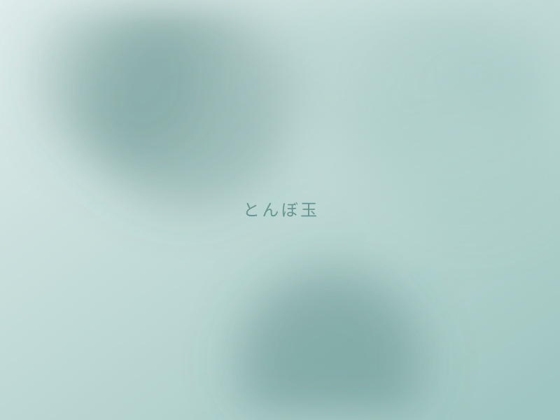
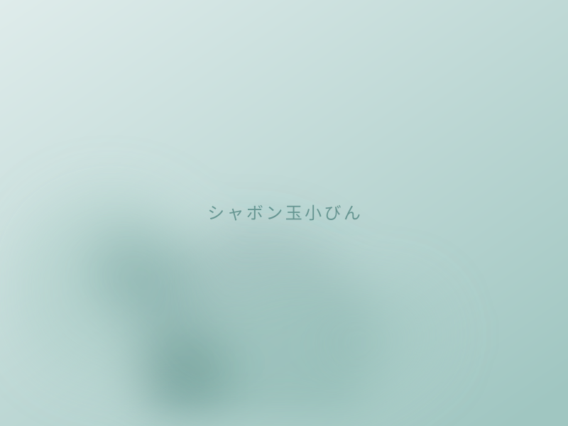
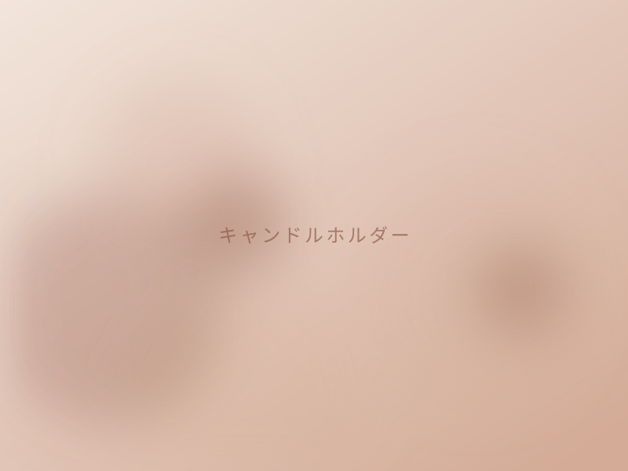

体験メニュー
バーナーでガラスを溶かしてかたちにする「バーナーワーク」の体験を、6つご用意しています。30分のプチ体験から、2時間かけてつくる風鈴まで。つくったものは、その日のうちにお持ち帰りいただけます。
-

- 約30分
- 8歳以上
- 定員 1〜6名
プチ体験！虹色とんぼ玉（1粒）
ガラス棒を火で溶かし、芯棒に巻きとって一粒のとんぼ玉をつくります。まずはガラスがやわらかくなる瞬間を見てみたい、という方に。小さなお子さまとご一緒の旅にも。
1,200円（税込）
-

- 約50分
- 8歳以上
- 定員 3名まで
とんぼ玉（チェーン1本付き）
色を重ね、模様を入れて仕上げるとんぼ玉。チェーンが1本付くので、その日からペンダントとして身につけていただけます。
2,500円（税込）
-

- 約50分
- 8歳以上
ティースプーン／マドラーづくり
色ガラスをよじって、柄のかたちをつくります。毎日の紅茶やコーヒーの時間に使える一本に。どちらをつくるかは当日お選びいただけます。
2,500円（税込）
-

- 約40分
- 13歳以上
- 定員 1〜4名
吹きガラス！シャボン玉小びん
息を吹き込んで、ガラスをふくらませます。うすく張ったガラスの膜が、シャボン玉のようにゆれて固まる。短い時間で吹きガラスを味わえるメニューです。
3,500円（税込）
-

- 約90分
- 13歳以上
キャンドルホルダーづくり
ふくらませた器に、色や模様を入れて仕上げます。灯りを入れると、昼とはちがう表情が出てきます。
4,500円（税込）
-

- 約120分
- 13歳以上
吹きガラスの風鈴
吹いてふくらませ、口を切り、絵を描くところまで。2時間かけてつくる、いちばん手のかかるメニューです。夏のあいだ鳴りつづける音を、自分の手から。
4,500円（税込）
※ 所要時間は2名でご参加の場合の目安です。料金はすべて税込です。
体験当日の流れ
-
ご予約
オンラインまたはお電話で、メニュー・日時・人数をお知らせください。ご予約を優先してご案内しています。
-
工房へお越しください
開始時刻の5分前を目安にお越しください。手ぶらで大丈夫です。動きやすく、燃えにくい素材の服装でお願いします。
-
道具と火の説明
バーナーの扱い方、ガラスの持ち方をご案内します。はじめての方も、ここで手順がつかめます。
-
制作
実際に火に向かいます。難しいところは手を添えますので、ご自分のペースで進めてください。
-
冷まして、お持ち帰り
ガラスを冷ます時間をいただいたあと、お渡しします。そのまま旅の続きへ、おみやげとしてお持ち帰りください。
ご参加にあたってのお願い
- 火を扱います。袖の広がった服、化学繊維の薄い服、サンダルはお避けください。
- 長い髪は結んでご参加ください。
- 対象年齢はメニューごとに異なります（8歳以上／13歳以上）。
- ご説明は日本語で行っています。
- キャンセルのご連絡は、できるだけ早めにお願いします。
よくあるご質問
予約は必要ですか？
ご予約を優先してご案内しています。空きがあれば当日でもお受けできますので、まずはお電話ください。ご予約はオンラインからも承っています。
何を持っていけばいいですか？
道具も材料も工房にありますので、手ぶらでお越しください。火を使いますので、燃えやすい素材の服や、袖の広がった服はお避けください。長い髪は結んでいただくと安心です。
子どもと一緒に参加できますか？
とんぼ玉とスプーン・マドラーづくりは8歳以上、吹きガラスのメニューは13歳以上が対象です。お子さまが体験されるあいだ、保護者の方は工房でお待ちいただけます。
作品はその日に持ち帰れますか？
はい。制作後、ガラスを冷ます時間をいただいたうえで、その日のうちにお渡しできます。
何人まで参加できますか？
メニューによって定員が異なります。小さな工房ですので、グループでお越しの場合は人数をお知らせのうえ、事前にご相談ください。
日本語以外でも体験できますか？
説明は日本語で行っています。日本語でのやりとりが難しい場合は、通訳ができる方とご一緒にお越しください。